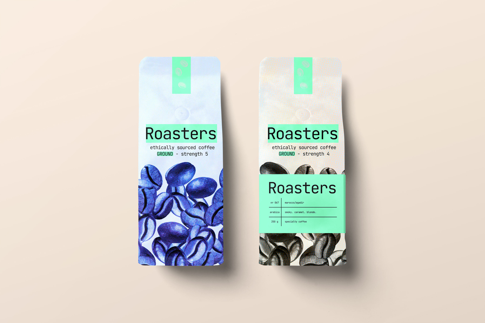

OVERVIEW
This was a little mini project I set myself for fun and to explore more branding during the summer. I made ChatGPT create the brief for me as I wanted to simulate the project as if it were a real coffee chain. I took inspiration from the Helwit design style monospace typography and dark neon colours.
RESEARCH
The brief was to create a brand identity for a fake coffee company set in Belfast, and design products to showcase the brand. I researched by visiting coffee shops & restaurants—Bunsen for the slick business-card menu; Fidela for branded ground coffee; Follow Coffee for bold, bright design that stands out.


DESIGNING
I focused on creating a confident, minimal system that could flex across packaging, menus, and signage. The palette leverages dark bases with neon accents; typography leans monospace to keep it utilitarian but characterful. Mock-ups were used heavily to sell the “real place” feeling.

OUTCOMES
I learned that a solid idea + consistent presentation goes a long way. I pushed mock-ups to make the brand feel like a real location. Favourites: the cup holder, the menu, and the coffee grounds packaging. I gave myself two weeks and I’m very pleased with the result.
